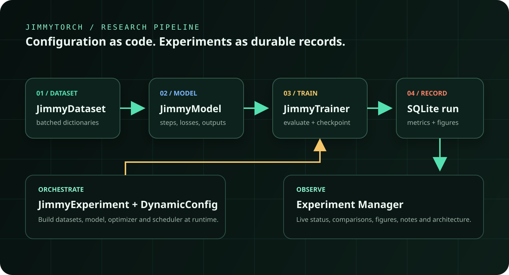

Dictionary contracts
Datasets expose named tensors; models select what they consume and return named losses and outputs.
PyTorch research infrastructure
JimmyTorch connects GPU-first datasets, explicit model steps, configuration-as-code, reproducible training, and a durable experiment dashboard.
Why JimmyTorch
Datasets expose named tensors; models select what they consume and return named losses and outputs.
DynamicConfig delays construction so experiments can adjust model, data, optimizer, and scheduler settings in one place.
Checkpoints, metadata, metrics, and figures live with each run while the optional dashboard compares them.
System map

The core training loop does not depend on the browser service. ExperimentLogger writes locally to SQLite, while ExperimentManagerClient reports live state on a best-effort background thread.
Documentation map
Batch indexing, split conventions, GPU-first loading, and queued preprocessing.
MODELStep contracts, mixed precision, reusable layers, losses, and checkpoints.
RUNDynamic configuration, schedulers, evaluation cadence, and saved artifacts.
OBSERVEStart the service, inspect live state, compare runs, and understand persistence.
EXTENDDiffusion, trajectories, sequences, mesh slicing, projection, and signed-distance images.
LOOK UPA source-aligned index of the framework's principal classes and functions.
Experiment Manager

The dashboard combines live progress, system utilization, run selection, scalar comparisons, figures, notes, and architecture views.
Design principles